第5回：静的コンテンツ配信から学ぶS3とCloudFrontの基本
1. はじめに
今回は静的コンテンツ配信（例：Webページ公開）を題材に、S3（ストレージ） と CloudFront（CDN） を中心に学習します。あわせて、本番運用で関係してくる周辺サービスも 概要として位置づけを整理します。
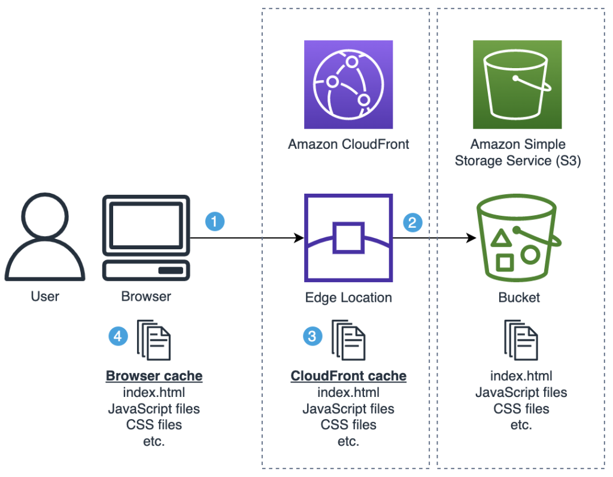
出典: Host Single Page Applications (SPA) with Tiered TTLs on CloudFront and S3
学習サービス（この回で扱うAWSサービス）
- S3（本編）：静的ファイルの保管場所（配信元）
- CloudFront（本編）：配信の入口（CDN／キャッシュ）
- Route 53（概要）：独自ドメインをCloudFrontに向けるDNS
- ACM（概要）：HTTPS証明書の発行・管理（CloudFront用は us-east-1 が重要）
- WAF（概要）：Web攻撃の検知・遮断（入口で守る）
- Shield（概要）：DDoS対策（標準機能と有料強化の位置づけ）
ハンズオン内容（本編でやること）
- S3に index.html をアップロードし、ファイルを置く／更新する体験をする
- CloudFrontを作成し、CloudFrontのURLからページが表示できることを確認する
- キャッシュの挙動（更新がすぐ反映されないことがある）を確認する
- Invalidation（キャッシュ削除）を実行し、更新を反映させる
S3とは（Amazon Simple Storage Service）
2.1 役割
Amazon S3は、ファイル（オブジェクト）を安全・高耐久に保管し、必要なときに取り出すためのオブジェクトストレージです。
2.2 ユースケース
S3は「静的サイト用」だけのサービスではなく、実務では次のような用途で広く使われます。
- 配信・公開の元データ置き場：HTML/CSS/JS、画像、PDF、ダウンロードファイルなど（必要に応じてCloudFrontなどの"配信の入口"と組み合わせます）
- ログ・バックアップの保管：アクセスログ、監査ログ、バックアップ、アーカイブなど
- ユーザーアップロードの保存先：投稿画像、添付ファイル、アップロードされた資料など
- データ蓄積（分析の材料）：アプリのイベントデータや集計前データをためて、後から分析に回す
- システム間の受け渡し：別サービスや別システムとのファイル受け渡し（バッチ処理・連携データなど）
この回では「Webページ公開」を題材にしますが、S3の本質はあくまで "汎用のファイル保管" です。
2.3 導入メリット
- 高い耐久性と可用性：代表的な S3 Standard は 耐久性 99.999999999%（11ナイン）、可用性 99.99% を提供するよう設計されています
- 保管と取り出しがシンプル：HTTP/APIで扱える
- 容量計画が要りにくい：利用量に応じて自然に増やせる
- アクセス制御が強い：IAMやバケットポリシーで「誰が・何をできるか」を細かく制御でき、Block Public Accessによって意図しない公開を抑える設計に寄せやすい
- コストを設計で最適化しやすい：ストレージクラスの選択やライフサイクルルールで最適化できる
- 他サービスと組み合わせやすい：CloudFront、Athena/Glue、Lambdaなど、S3を中心に構成を組み立てやすい
2.4 仕組み
S3は「サーバーにログインしてディスクへ保存する」方式ではなく、オブジェクト（ファイル）を、HTTP（API）で保存・取得するストレージです。
- バケット（Bucket）：オブジェクトを入れる入れ物。作成時にリージョンを指定します
- オブジェクト（Object）：実体のファイル。ファイル本体に加えてメタデータ（Content-Type など）が付きます
- キー（Key）：オブジェクトはキーで識別され、
assets/logo.pngのように / を含むキー名を使うことで、見た目がフォルダっぽく見えます - アクセス制御：IAM、バケットポリシー、パブリックアクセスブロックなどの組み合わせで決まります
2.5 重要機能
- ストレージクラス：用途に応じたコスト最適化（Standard、Glacier等）
- バケットポリシー / IAM：アクセス制御の中心
- パブリックアクセスブロック：公開事故を減らす最重要ガード（本番運用では基本的にON推奨）
- 暗号化（SSE等）：保管時の暗号化
- バージョニング：上書き事故や復旧に効く
- ライフサイクル：一定期間後の移行/削除を自動化
- レプリケーション：別リージョン/別バケットへ複製
2.6 セキュリティの基本
S3はまず "公開しない前提（private）で設計する" のが基本です。
- 基本は private（最小権限）
- パブリックアクセスブロックを活用する
- アクセス制御は IAM とバケットポリシーが中心
- "直接公開"より"入口を分ける"設計が安全（例：CloudFront + OAC）
3 CloudFrontとは（Amazon CloudFront）
3.1 役割
Amazon CloudFrontは、Webコンテンツをユーザーに届けるための CDN（Content Delivery Network） です。
役割は大きく次の2つです。
- 配信の入口（Front Door）：ユーザーはまずCloudFrontにアクセスし、CloudFrontが配信を取りまとめます
- キャッシュ（Cache）：一度取得したコンテンツをエッジロケーション（利用者に近い配信拠点）に保持し、次回以降はオリジン（配信元）へ取りに行かずに返せるようにします
🔳 静的ウェブサイトを例にした配信の流れ
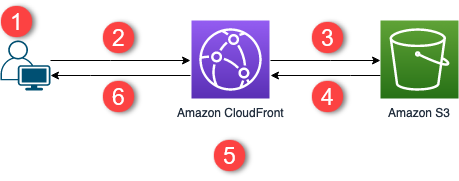
出典: Amazon CloudFront Developer Guide
- ビューワーが www.example.com のウェブサイトをリクエストします。
- リクエストされたオブジェクトがキャッシュされている場合、CloudFront はオブジェクトをキャッシュからビューワーに返します。
- オブジェクトが CloudFront のキャッシュにない場合、CloudFront はオリジン (S3 バケット) にオブジェクトをリクエストします。
- S3 はオブジェクトを CloudFront に返します。
- CloudFront はオブジェクトをキャッシュします。
- オブジェクトがビューワーに返されます。同じ CloudFront エッジロケーションに送信されるオブジェクトに対する後続のリクエストは、CloudFront キャッシュから処理されます。
3.2 ユースケース
- 静的コンテンツ配信（Web表示／ファイル配布）：Webサイト素材（HTML/CSS/JS/画像）や配布ファイル（PDF/ZIP/動画）を高速・安定配信したいとき
- APIの前段：オリジンをALBやAPI Gatewayにして、APIをCloudFront配下で配信する
- アクセス集中・スパイク対策：急なアクセス増でも、キャッシュでオリジンへの負荷を抑える
- 独自ドメイン／HTTPS／WAFを入口に集約：公開面（証明書・DNS・防御）をCloudFront側で整理したいとき
3.3 導入メリット
- 速くなりやすい：ユーザーに近いエッジロケーションから配信でき、レイテンシが下がりやすくなります
- オリジンへの負荷が減る：キャッシュが効くと、S3などのオリジンに毎回取りに行かずに済みます
- スパイク耐性が上がる：急にアクセスが増えても、キャッシュがクッションになります
- 入口の整備がしやすい：独自ドメインやHTTPSなど「公開面の整備」をCloudFront側に寄せやすくなります
- 入口防御をかけやすい：WAFをCloudFrontに関連付けることで、入口で攻撃を検知・遮断しやすくなります
3.4 仕組み
CloudFrontは「ユーザーのリクエストを受け取る入口」として動き、必要に応じて オリジン（配信元） からコンテンツを取得し、エッジにキャッシュして配信します。
- ユーザーがCloudFrontにアクセスする
- エッジにキャッシュがあれば、キャッシュから返す（速い）
- キャッシュがなければ、CloudFrontがオリジン（S3）に取りに行く
- 取得した内容をエッジロケーションにキャッシュして返す（次回以降が速くなる）
3.5 重要概念
- Distribution：配信設定のまとまり
- Origin：配信元（この回ではS3）
- Edge Location：配信拠点、キャッシュサーバー
- Behavior：パス別の配信ルール（キャッシュ/TTL、オリジン、許可メソッドなど）
- TTL / Cache-Control：CloudFrontは一度取得したコンテンツをキャッシュし、オリジンが返す Cache-Control（max-age などのキャッシュ寿命） や CloudFront側のTTL設定に従って、一定時間はキャッシュを返します。
- Invalidation：キャッシュ削除（更新を急いで反映したいときの臨時手段）
- Default root object：
/(ルート)にアクセスしたときに返す規定のファイル（例：index.html） - OAC（Origin Access Control）：S3を非公開のまま、CloudFront経由のアクセスだけ許可して配信する仕組み
3.6 セキュリティの基本
CloudFrontは公開配信の入口なので、基本方針は 入口をCloudFrontに集約し、オリジンを閉じる です。
- オリジンを直接公開しない：代表例がS3 private + OAC
- HTTPSを基本にする：HTTPはHTTPSへリダイレクトする設計が一般的
- WAFで入口防御をかける：攻撃・Bot・過剰アクセスなどを入口で止められます
4. ハンズオン（本編）
このハンズオンは、Webページ（index.html）を置く場所をS3に作り、そのページをCloudFront経由で表示できる状態にします。
そのあと、キャッシュ機能により index.html を更新しても CloudFront 側では古い内容が表示されることを確認し、最後に Invalidation Cache-Control を使って「更新の反映タイミング」を扱う方法を押さえます。
- S3バケットを作成（privateのまま）
- S3にindex.html（v1）をアップロードして「S3直アクセス不可」を確認
- CloudFrontを作成（S3オリジン + OAC）
- CloudFrontのURLから index.html が見えることを確認
- index.html（v2）をアップロードし、キャッシュにより「CloudFrontは古い内容(v1)が出る」ことを確認
- Invalidationを実行して「CloudFrontで更新が反映される」ことを確認
- (任意)Cache-Controlから更新の反映タイミングを設定する
Part A：配信を成立させる（必須）
4.1 S3バケットを作る
S3はprivateにし、公開しないようにします。
- AWSマネジメントコンソールで S3 を開く
- 左メニューの Amazon S3 を開き、[バケットを作成] をクリック
※リージョン：アジアパシフィック（東京）であること確認 - バケット名：任意（例：
aws-study-session5-20260208）
※世界で一意である必要があります。被ったら末尾に乱数を足します。 - オブジェクト所有者：基本は 「ACL無効（推奨）」 のまま進めます
- 「パブリックアクセスをすべてブロック」はONのまま進めます
- 画面下部の [バケットを作成] をクリック
- バケットが作成されたことを確認
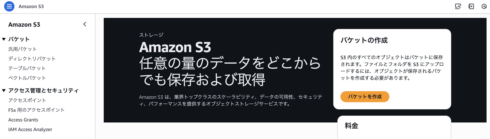
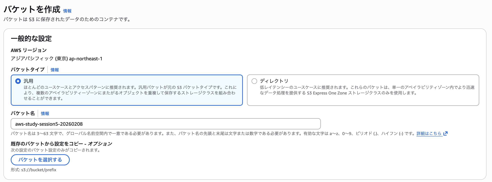
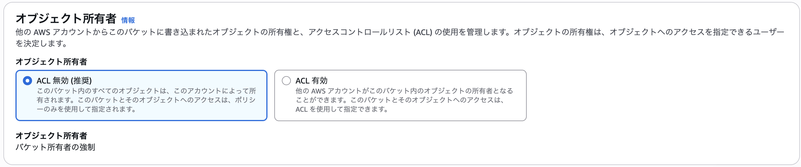
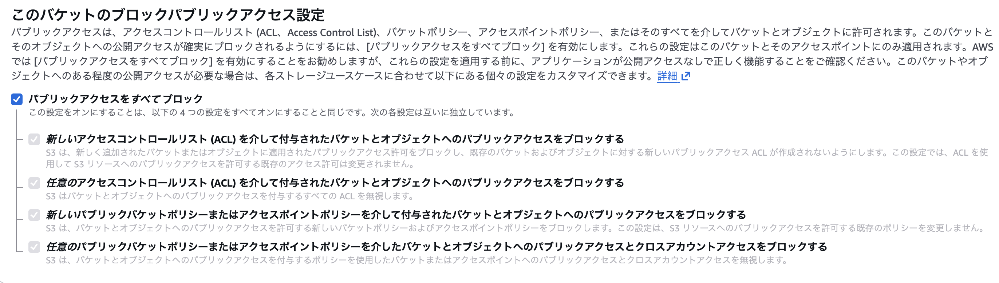
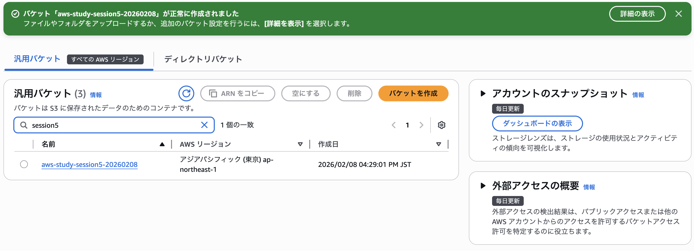
4.2 S3にindex.htmlをアップロード
S3はprivateだと、URLを叩いても見えないことを体験します。Access Denied が正しい挙動です。
- ローカルで index.html を作成（v1）
<html>
<body>
<h1>Hello CloudFront!</h1>
<p>This is v1.</p>
</body>
</html>- 作成したバケットを開き、[アップロード]をクリック
- 「ファイルを追加」からindex.html を追加し、 [アップロード]をクリック
- index.htmlがアップロードされたことを確認する。公開されていないか確かめるため、index.htmlをクリックしてオブジェクト詳細を開く
- オブジェクトURL をコピーして、シークレットウィンドウで開く
※ブラウザにキャッシュされないよう、シークレットウィンドウを使用します - AccessDeniedが表示されることを確認する
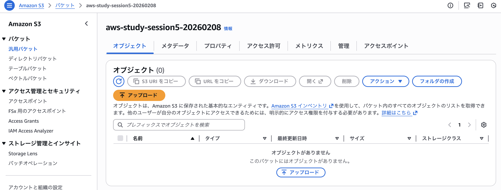
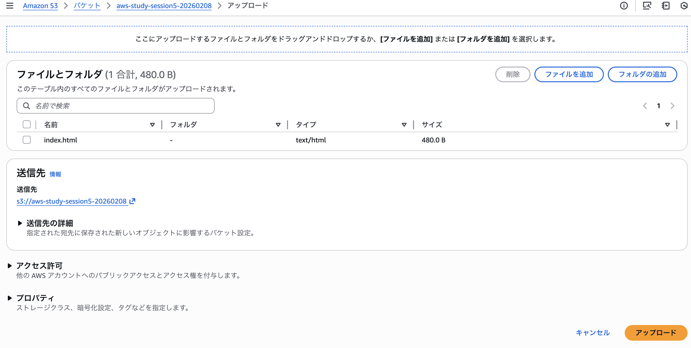
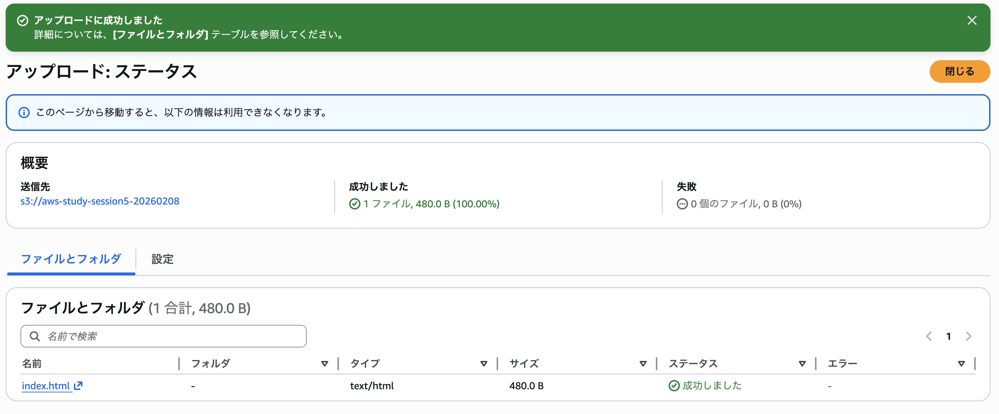
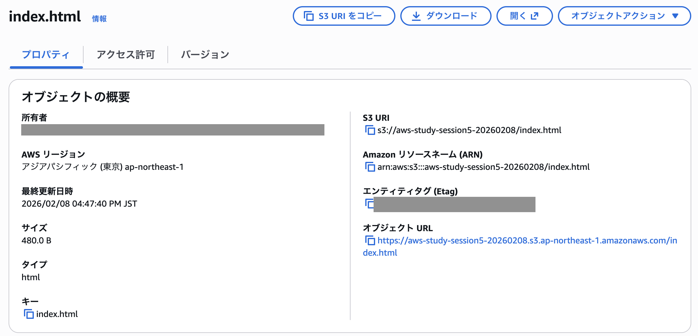
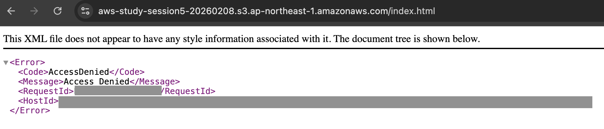
4.3 CloudFrontを作成（S3オリジン + OAC）
目的：入口＝CloudFront、置き場＝S3（privateのまま） を完成させる。
- CloudFront コンソールを開く
- ディストリビューション → ディストリビューションを作成
- pay as you go を選択して次へ
- ディストリビューションの名前を入力し次へ
- Origin typeはS3とし、originに作成済みのS3バケットを選択
- Settingsはそのまま(推奨設定)で次へ
- WAFはそのままで次へ(有効か無効かの選択肢が表示された場合は無効を選択)
- 残りはデフォルトのまま Create distribution を実行
- ディストリビューションが作成されたことを確認する
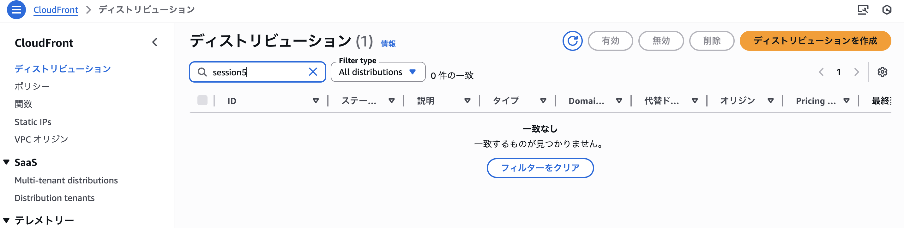
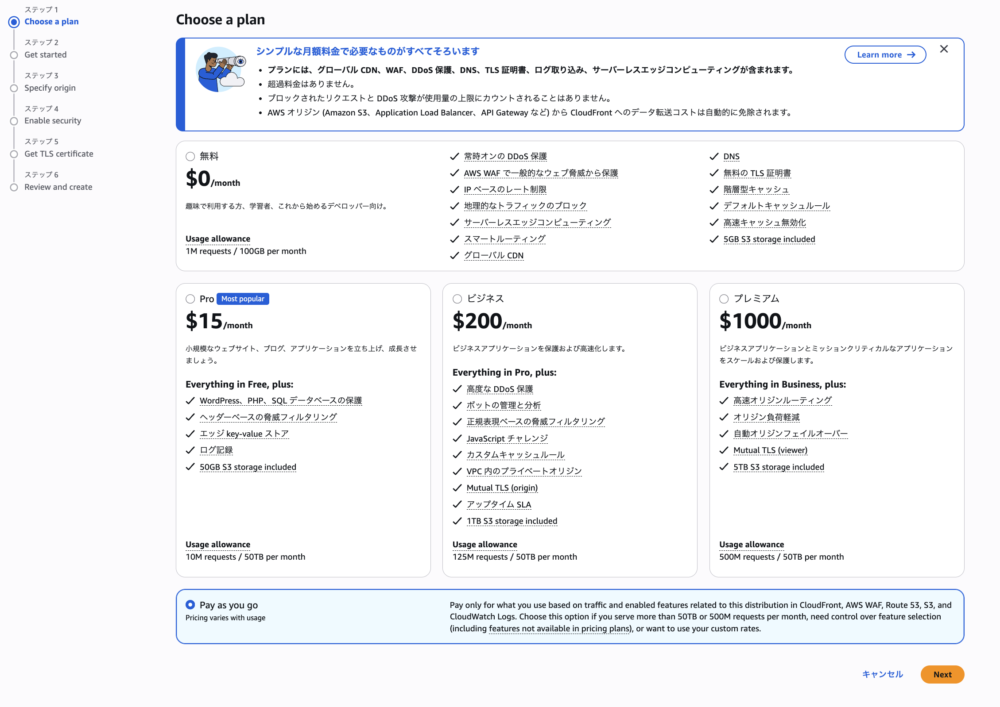
※ pay as you goを選んでも今回のハンズオンは無料枠内で実施可能です。無料プランを選んだ場合は、後片付けで完全にリソースを削除できるタイミングが翌月になるため、注意が必要です。
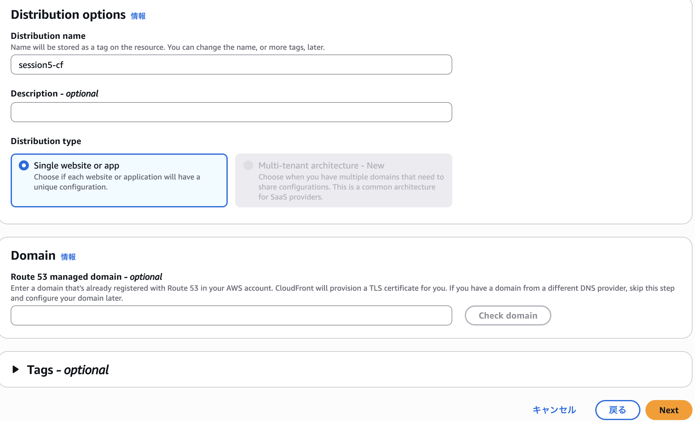
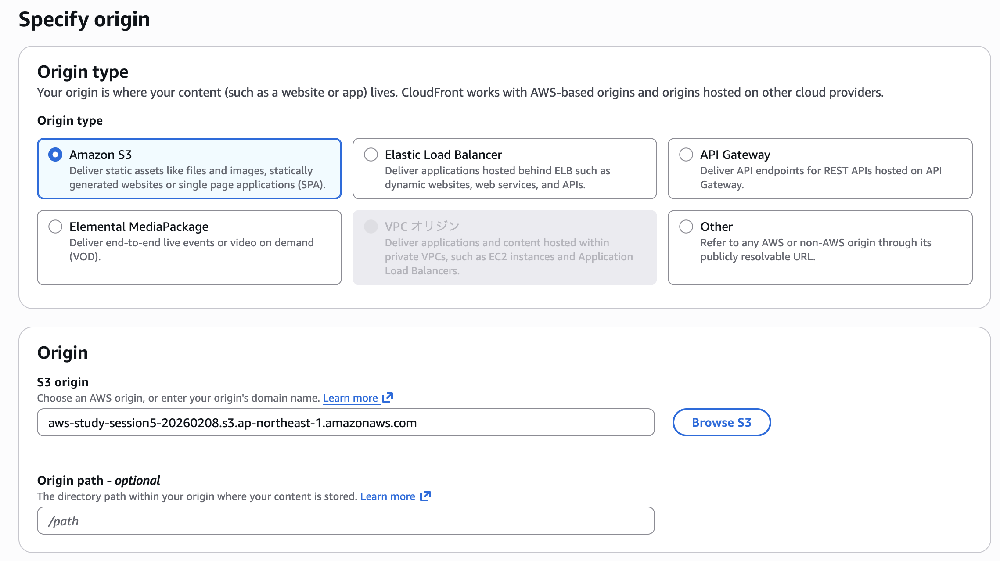
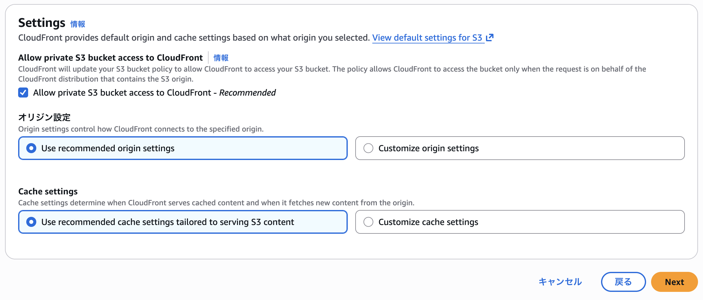
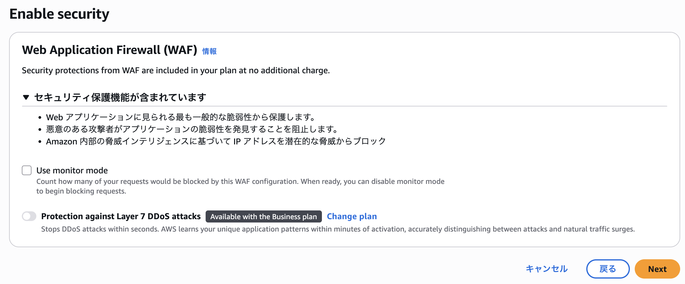
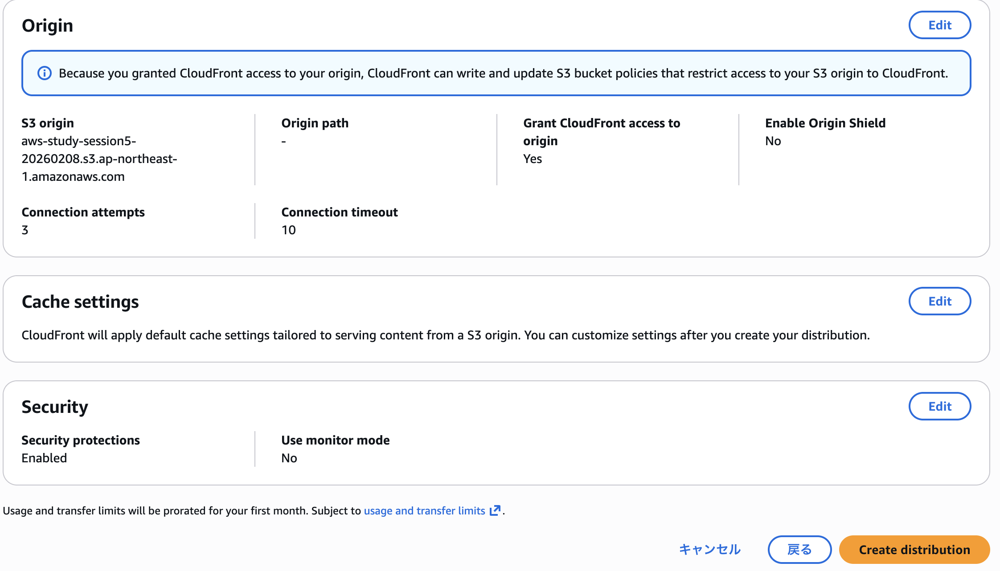
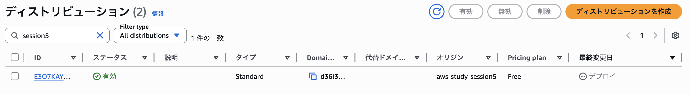
4.3.1 S3バケットポリシーの更新(必要に応じて)
※S3バケットポリシーの更新はディストリビューション作成時にSettingsを推奨設定にした場合、自動で行われるようです
※S3バケットのアクセス許可からバケットポリシーを確認し、CloudFrontからのアクセスが許可されている場合、4.3.1の対応は必要ありません
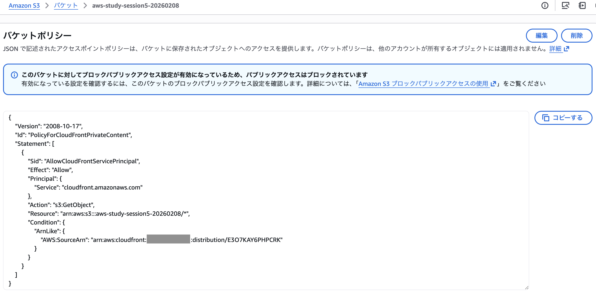
- CloudFrontコンソールの作成完了画面に、バケットポリシーのコピーボタンが表示されるので、それをコピー
- S3バケット → アクセス許可 → バケットポリシー → 編集
- CloudFrontの案内で出たポリシーを貼り付け → 保存
4.4 デフォルトルートオブジェクトの設定
- CloudFrontコンソール → 作成したディストリビューションをクリック
- 一般 タブの 編集 をクリック
- Default root object に
index.htmlを入力 - 変更を保存 をクリック
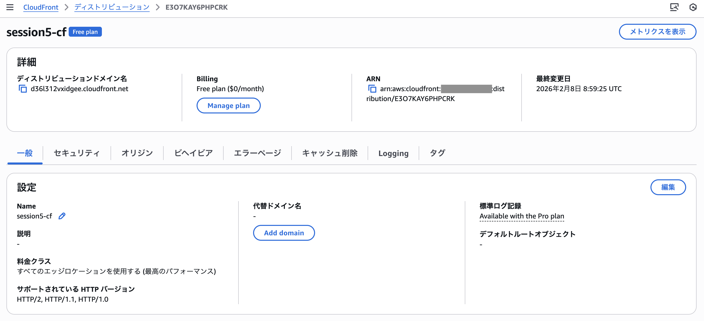
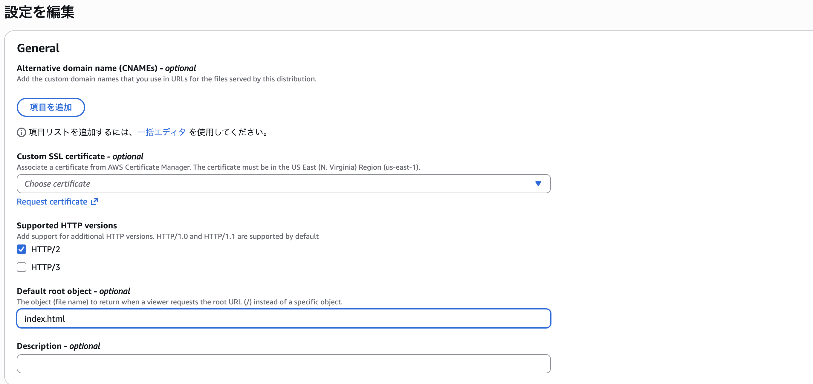
4.5 表示確認（CloudFrontのURLで Webページが見える）
- CloudFrontディストリビューションを開く
- ディストリビューションドメイン名（
xxxxx.cloudfront.net）をコピー - ブラウザ(シークレットモード)からアクセスし、Webページ(v1)が表示されることを確認
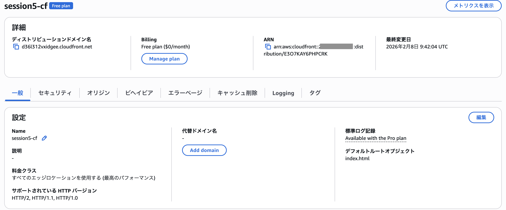
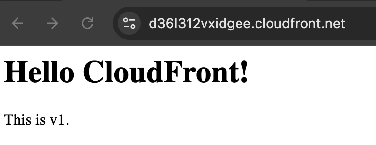
S3に直接アクセスするとAccess Deniedでしたが、CloudFrontからは Webページが表示されることを確認しました。
Part B：キャッシュを体験する
4.6 キャッシュ機能の確認(index.html を v2 に更新した際に、v1が表示されることを確認する)
4.6.1 S3の index.html を v2 に更新
- ローカルの index.html を v2 に変更して保存（例）：
- AWSコンソール → S3 → 対象バケット → 作成したオブジェクトを開く
- アップロード をクリック
- index.html再度をアップロード（同名のためv1からv2に上書きされます）
<html>
<body>
<h1>Hello CloudFront!</h1>
<p>This is v2.</p>
</body>
</html>4.6.2 CloudFrontで反映されない（v1のまま）ことを観察する
- ブラウザ(シークレットモード)から CloudFront のURL（さきほどのディストリビューションドメイン名）を再読み込み
- v1が表示されることを確認（＝CloudFrontキャッシュによりv2が反映されていない）
4.7 CloudFrontでキャッシュ削除(invalidation)を作成して v2 を反映する
- ディストリビューションのキャッシュ削除のタブから、キャッシュ削除を作成をクリック
- オブジェクトパスに
/*を入力し、キャッシュ削除を作成をクリック - キャッシュ削除のステータスが進行中から完了済みとなるのを確認
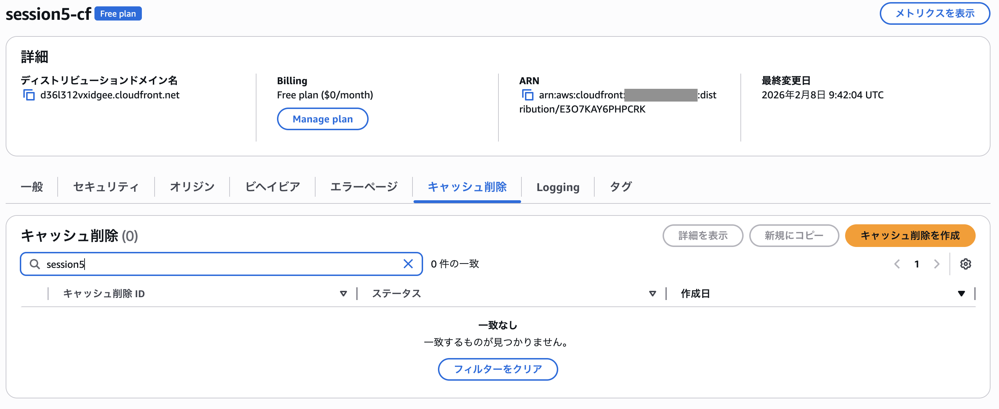
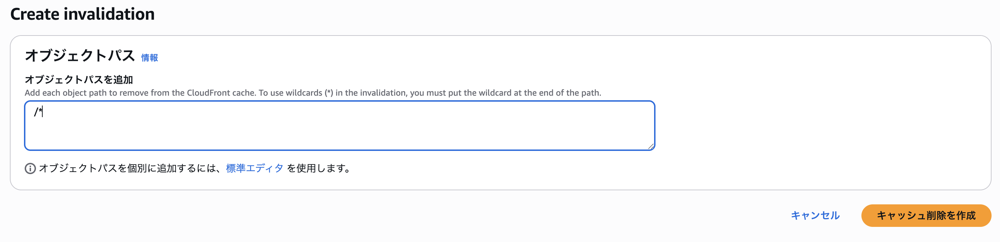
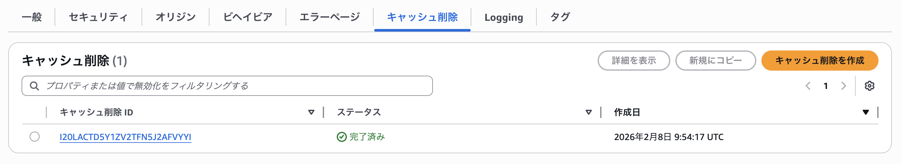
反映確認
- CloudFront URLを再読み込みし、v2が表示されることを確認
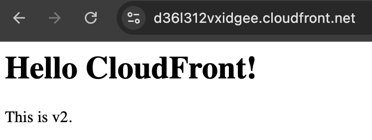
補足：キャッシュ削除(Invalidation)は「緊急手段」として理解するのが安全です（普段は TTL / Cache-Control でキャッシュをコントロールする）。Invalidationは 月あたり合計1,000パスまでは無料で、超えると課金対象です。
Part C：(実施任意)Cache-Controlで"設計で効かせる"を体験
4.8 Cache-Control を触る
Invalidationで強制反映できるのは分かったので、次は 「設計（Cache-Control）でキャッシュ寿命をコントロールできる」ことを体験します。
4.8.1 事前確認：CloudFront側で"キャッシュ無効"になっていないことを確認
- CloudFrontコンソール → ディストリビューション → ビヘイビアタブ → デフォルト(*)のビヘイビアを選択 → 編集
- Cache policy が
CachingDisabledになっていないことを確認
※多くの構成では CachingOptimized 系になっています
4.8.2 S3の index.html に Cache-Control を設定する（例：max-age=60）
- S3コンソール → 対象バケット → Objects
- アップロード → ファイルを追加 → index.html
- 画面下部のプロパティを開く
- 画面下部のメタデータセクションでメタデータを追加(タイプ：システム定義、キー：Cache-Control、値: max-age=60)
- アップロードする
4.8.3（推奨）CloudFrontに"新しいヘッダー込み"で取り直させる
- CloudFrontコンソール → 対象Distribution
- Invalidations タブ → Create invalidation
- Object path：
/* - Create invalidation
- Status が Completed になったら次へ
4.8.4 CloudFront経由で「Cache-Controlが効いている」を確認（レスポンスヘッダーを見る）
- ブラウザで CloudFront URL（
https://xxxxx.cloudfront.net/）を開く - 開発者ツール（DevTools）を開く
- Network タブ
- （重要）Networkタブ上部の Disable cache をON（DevToolsを開いている間だけブラウザキャッシュを無効化）
- ページをリロード
- Network一覧から cloudfront.net(document)をクリック
- HeadersからResponse Headers を確認
cache-control: max-age=60が見えること- 可能なら
x-cacheも確認（1回目：Miss from cloudfront、2回目以降：Hit from cloudfront）
確認ポイント：CloudFrontのレスポンスに cache-control: max-age=60 が載っている
4.8.5（余力）v3に更新して「60秒は古いのが返る」→「時間経過で反映」を観察
- ローカルの index.html を v3 に変更（例：
This is v3.） - S3に index.html を上書きアップロード（Cache-Controlはそのまま max-age=60 でOK）
- すぐに CloudFront URL をリロード → v2が表示されることがある（= TTLが残っている想定の挙動）
- 60秒以上 待ってからリロード → v3が反映されることがある
5. 後片付け
コスト事故を防ぐため、必ずリソースを削除してください。
5.1 CloudFront（Distribution）を削除する（必須）
CloudFrontは 無効 → Free planのキャンセル → 削除 の順でしか削除できません。
5.1.1 無効化（配信停止）
- CloudFront → Distributions → 対象にチェック → 無効
- 最終更新日の表示がデプロイから日付表示に変わるまで数分待ちます
5.1.2 プランの変更(4.3の3で無料プランを選択した場合のみ)
- CloudFront → 対象ディストリビューション → Manage plan(Billing) → Cancel plan
- ※無料プランをキャンセルしPay-as-you-goに切り替えます。切り替わるタミングが翌月になるため、削除は翌月以降に行う必要があります
5.1.3 削除
- ステータスが無効になったら、対象にチェック → 削除
※ 削除完了まで数分かかることがあります
5.2 S3（バケット）を削除する（必須）
S3は 中身が残っていると削除できません。
5.2.1 バケットの中身を空にする
- S3 → Buckets → 対象バケット → Objects → index.htmlをチェック → 削除(「完全に削除」と入力し削除を行う)
5.2.2 バケットを削除する
- 汎用バケット → 対象にチェック → 削除(バケット名を入力し削除を行う)
5.3 最終チェック
- CloudFront のDistributionが一覧から消えた
- S3のバケットが一覧から消えた
6. 周辺サービスの位置づけ整理（Route 53 / ACM / WAF / Shield）
本番に近づける際に関わる周辺サービス（Route 53 / ACM / WAF / Shield）を整理します。ハンズオンは行いません（ドメイン取得や追加課金が絡むため）。
6.1 Route 53とは
6.1.1 役割
Amazon Route 53 は DNS（Domain Name System） のサービスです。
人間が覚えやすい ドメイン名（例：cloud-n-code.com）と、実際の接続先（IPアドレスやCloudFront/ALBなどのエンドポイント）を結び付けて、ユーザーのアクセスを「正しい宛先」に案内します。
6.1.2 ユースケース
- Webサイト／APIの名前解決（基本）：www.cloud-n-code.com → CloudFront / ALB / EC2 など、公開エンドポイントへ誘導
- DNSフェイルオーバー：2つ以上の同機能エンドポイントを用意し、片方が不調ならもう片方へ切り替える（ヘルスチェックと組み合わせ）
- ルーティング（振り分け）：重み付け、レイテンシ、地理、フェイルオーバーなど「どこへ案内するか」をポリシーで制御
- VPC内専用DNS：インターネット非公開の内部サービスを、VPCの中だけで名前解決させる
6.1.3 重要機能
- Hosted Zone：DNSレコードの管理単位。Public（インターネット向け）と Private（VPC内限定）があります
- Aliasレコード（Route 53独自機能）：AWSリソース（CloudFront/ALB等）へ"DNS的に安全に"向けるための仕組み。ゾーン頂点（apex）にも設定でき、AWSリソースへのAliasクエリは課金されない
- ルーティングポリシー：Weighted（重み付け）、Latency、Failover、Geoproximity/Geolocation 等
- ヘルスチェック & DNSフェイルオーバー：エンドポイントの正常/異常を監視し、異常時に別宛先へ切り替え
6.2 ACMとは（AWS Certificate Manager）
6.2.1 役割
AWS Certificate Manager（ACM）は、WebサイトやAPIをHTTPS化するための SSL/TLS 証明書（X.509）を、発行・保管・更新（リニューアル）まで含めて管理するサービスです。
証明書を「買う／更新する／期限切れを監視する」などの運用負担を減らしつつ、AWSの各サービス（例：ELB、CloudFront、API Gateway など）に証明書を安全に関連付けられるようにします。
6.2.2 ユースケース
- Webサイト／APIのHTTPS化（最頻出）：CloudFront、Elastic Load Balancing（ALB/NLB）、API Gateway などに証明書を設定
- ワイルドカード／複数ドメイン（SAN）証明書の運用：
*.cloud-n-code.comのようなワイルドカード、または複数FQDNを1枚で管理 - 他社証明書の取り込み管理：既に持っている証明書をACMにインポートして管理を集約
6.2.3 重要機能
- 証明書の種類：パブリック証明書（Amazon発行）、エクスポート可能なパブリック証明書、プライベート証明書
- ドメイン所有確認：DNS検証（運用上おすすめ）、メール検証
- 更新（リニューアル）運用：DNS検証は自動更新に寄せやすく、メール検証は期限が近づくと通知・再承認が必要
- 「リージョン」の考え方：CloudFrontでACM証明書を使う場合、証明書は us-east-1（バージニア北部）で用意する必要があります
CloudFrontで使用するACM証明書は、必ず us-east-1（バージニア北部） リージョンで発行する必要があります。東京リージョンで発行してもCloudFrontでは選択できません。
6.3 WAFとは（AWS WAF）
6.3.1 役割
AWS WAF（Web Application Firewall）は、Webアプリケーションに届く HTTP/HTTPS リクエストを検査して、許可・遮断・計測できる「アプリ層の防御」サービスです。
SQLインジェクションやXSSなどの典型的なWeb攻撃、Botアクセス、過剰なリクエスト（L7のDoS寄り）などに対して、"入口で止める"ことを目的に使います。
6.3.2 ユースケース
- 典型的なWeb攻撃の遮断：SQLi / XSS など、よくある攻撃パターンをルール（またはマネージドルール）で弾く
- IPベースの制御：特定IPの拒否、管理画面は社内IPのみ許可、など
- Bot対策：スクレイピング、クレデンシャルスタッフィングの入口対策
- レート制限：短時間の大量アクセス対策（Rate-based ルール）
- 段階導入：まず "Count（計測）" で影響を観測してから "Block" に切り替える
6.3.3 重要機能
- Web ACL：WAF設定の本体。どのリソースを守るか、デフォルト動作、ルールの優先順位などをまとめます
- ルール / ルールグループ：「こういう条件のリクエストを、こう扱う（Allow/Block/Count…）」の集合
- マネージドルール：AWSが用意したルールセットを取り込んで"基本の守り"を作れます（例：Bot Control）
- CAPTCHA / Challenge：「怪しいが即ブロックは怖い」トラフィックに対して、人間/自動化を切り分ける
- レートベースルール：短時間に大量アクセスする送信元などを検知してブロック/制限
6.4 Shieldとは（AWS Shield）
6.4.1 役割
AWS Shield は、AWS上のシステムを DDoS攻撃（大量トラフィックでサービス妨害する攻撃） から守るための マネージド型DDoS防御サービス です。
主に ネットワーク〜トランスポート層（L3/L4） の防御を土台として提供し、アプリ層（L7）はWAF等と組み合わせて入口で守る設計に寄せるのが一般的です。
6.4.2 2つのレベル
- Shield Standard（標準）：多くのAWS利用で自動的に有効。追加料金なし。代表的なエッジ/入口系サービス利用で自動的に有効化され、追加料金もありません
- Shield Advanced（強化）：有料サブスク。より高度な検知・緩和、専門チーム支援、コスト保護などが追加されます。月額$3,000（※ 2026年2月時点 料金表参照） のサブスクに加え、データ転送等の従量が発生し得ます
6.4.3 重要機能
- 可視化（通知・診断）：Shield Advancedは、DDoSイベントの可視化や通知（CloudWatchなど）や診断情報を提供
- SRT支援とプロアクティブエンゲージメント：攻撃で可用性に影響が出たときに、専門チームへ支援を求められる
- DDoSコスト保護：DDoSが原因で保護リソースがスケールして費用が増えた場合、条件を満たせばクレジットを申請できる
- Protection group：複数リソースを"1つの単位"として検知・緩和の精度を上げる
7. おわりに
第5回では、静的コンテンツ配信を題材に S3（保管）＋ CloudFront（配信の入口） という基本形を作りながら、次のポイントを押さえました。
- S3は「ファイルを置く場所」として使い、まずは private のまま 扱えることを確認しました
- CloudFrontを入口にすることで、速さ・安定性を得つつ、オリジン（S3）を直接公開しない設計に寄せられることを学びました
- キャッシュは強力ですが更新反映にクセがあるため、Invalidation や Cache-Control などで「反映を設計する」考え方が必要だと体験しました
- OAC を使うことで、S3を非公開（Block Public Access ON）のまま、CloudFrontからのみアクセスできる推奨構成を実現できます
また、Route 53 / ACM / WAF / Shield は、この構成を運用として整える際に関わる周辺要素として、役割と位置づけを整理しました。
次回は Docker を学習します。AWSサービスそのものではありませんが、ECSを理解するうえで欠かせない仕組みになります。